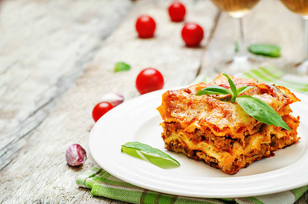

Lasagna Recipe

what is lasagna
Lasagna is the name of one of the oldest and best-known pasta shapes. It is usually rectangular or ribbon shaped, thicker than tagliatelle, made from a dough based on flour and eggs, with numerous local variants. After being boiled, the rectangular lasagna noodles are drained and placed in layers with a filling that varies based on different local traditions.
How To
There is a fresh version of lasagna that requires pre-boiling the pasta before filling it or adding sauce and then baking. There are also commercial versions, however, that allow for spreading the pasta in a baking pan and filling it or adding more liquid sauces so that the pasta softens during cooking. The sauces may be based on tomatoes and meat, cheese, pesto or even vegetables and béchamel. On top of it all, there is a layer of Parmigiano Reggiano cheese, and it is baked for a length of time that depends on the type of lasagna noodles used.
Ingredients
- 1 medium zucchini, halved lengthwise and sliced
- ⅓ cup chopped red onion
- 1 cup shredded mozzarella cheese, divided
- ½ cup crumbled feta cheese
- 2 portobello mushrooms, sliced
- 4 cups fresh baby spinach
- ¼ cup chopped fresh basil
- 1 tablespoon chopped fresh oregano
- 3 cloves garlic, minced
- 3 tablespoons olive oil
- ¼ cup balsamic vinegar
- 1 teaspoon sugar
- ½ teaspoon salt
- ¼ teaspoon freshly ground black pepper
- 1 (8 ounce) package no-boil lasagna noodles
- 9 roma (plum) tomatoes, thinly sliced
Steps
- Preheat the oven to 350 degrees F (175 degrees C). Lightly coat a 9x9 inch baking dish with cooking spray.
- In a large bowl, toss together the zucchini, mushrooms, spinach, garlic, red onion, 1/2 cup mozzarella cheese, and feta cheese. Drizzle with olive oil and balsamic vinegar, and stir in basil, oregano, sugar, salt and pepper. Stir the mixture until evenly blended.
- Place a layer of lasagna noodles into the bottom of the prepared pan. Make a layer of tomato slices over the noodles. Spread a generous amount of the spinach mixture over the tomatoes. Don't worry, it shrinks a lot while cooking. Lay slices of tomatoes over the spinach mixture, then another layer of noodles. Start with another layer of tomatoes on top of the noodles, and repeat layering until the dish is heaped with lasagna, ending with the vegetable mixture. Sprinkle remaining cheese on the top.
- Bake for 35 to 45 minutes in the preheated oven, until noodles, and vegetables are tender. Let stand for a few minutes to set, then slice and serve.